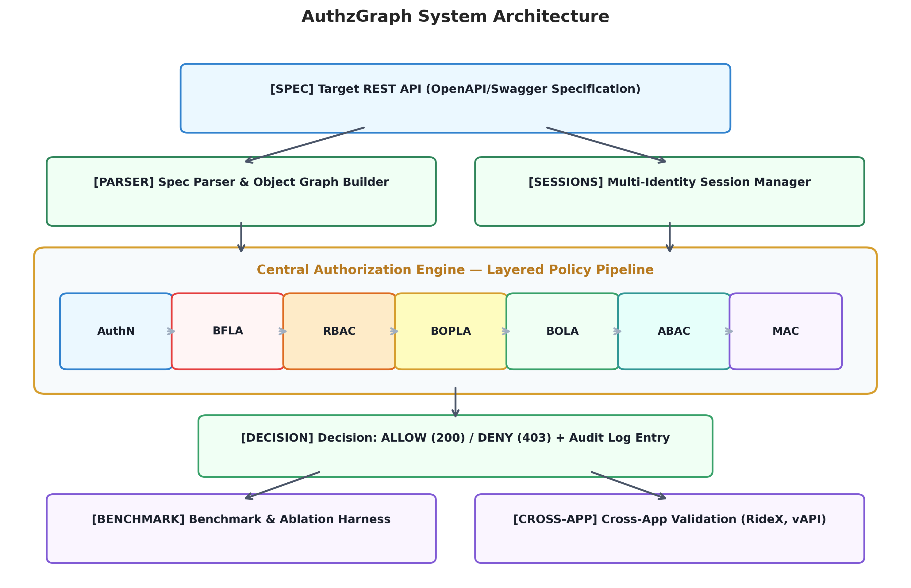
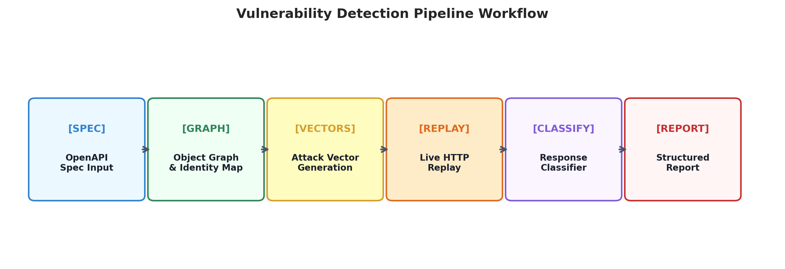
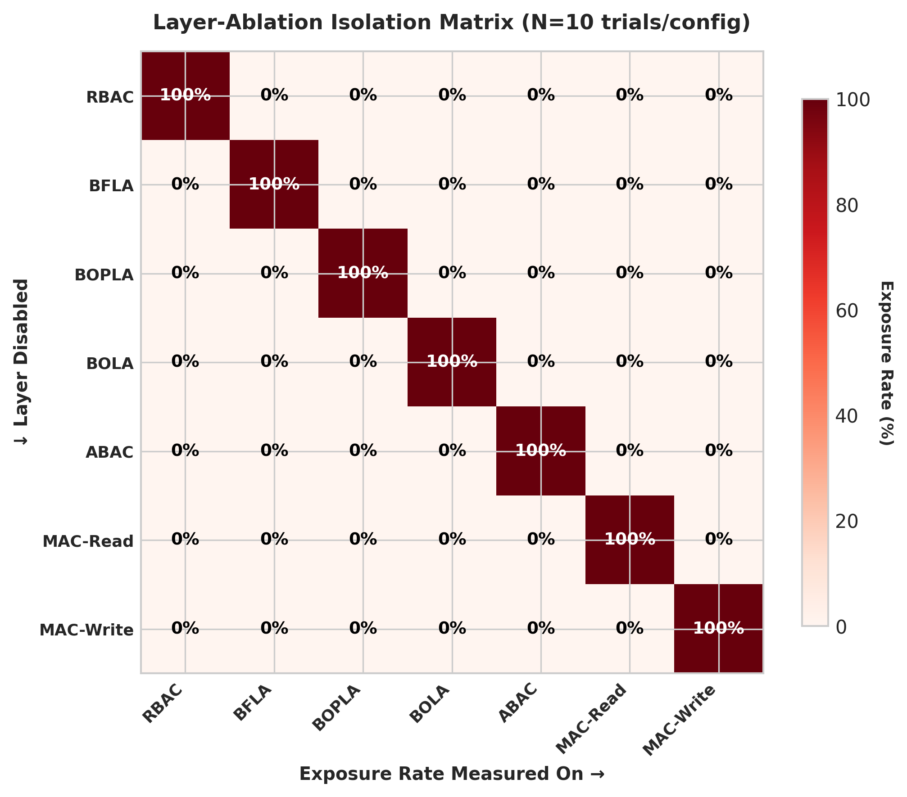
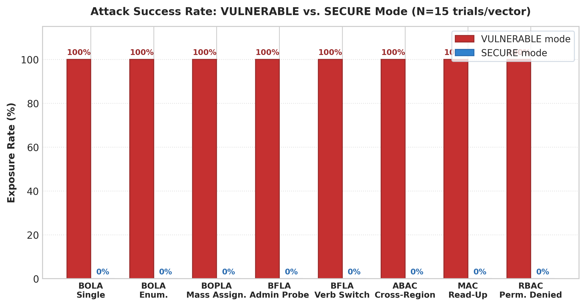

I. Introduction
Cybersecurity has become a major concern in today's digital world. As we rely more on web applications, cloud services, and interconnected systems, the need for protection grows. Organizations depend on vulnerability assessment and penetration testing (VAPT) to find weaknesses in their infrastructure before attackers can exploit them. However, traditional VAPT processes need skilled security analysts who manually interpret scanning results, analyse possible vulnerabilities, and suggest fixes. This manual analysis can take a lot of time, especially with large networks and complex systems.
The field of cybersecurity vulnerability assessment has changed with the rise of automated scanning tools like network scanners and web application scanners. While these tools can find open ports, services, and potential vulnerabilities, they usually produce technical reports that require expert knowledge to understand. This means organizations often struggle to grasp the real impact of detected vulnerabilities and figure out suitable ways to address them.
Another issue is the growing amount of security data produced during scanning. Security analysts must sift through large logs, configuration files, and sometimes even suspicious images like phishing screenshots to see if a threat is present. This slows down the analysis process and raises the risk of human error.
To tackle these challenges, this project suggests an AI-Powered VAPT Copilot that mixes automated security scanning with artificial intelligence reasoning. The proposed system links network scanning tools to a locally hosted large language model to analyse results, spot vulnerabilities, and offer practical recommendations. The system accepts various data sources, including URLs, files, and images, allowing for thorough vulnerability analysis. By automating vulnerability interpretation and providing clear explanations, this approach helps cybersecurity professionals identify and reduce security risks more effectively.
Today the attack surface of cyber threats has increased because organizations depend on digital systems, web applications, and cloud infrastructure. Traditional approaches to vulnerability assessment and penetration testing (VAPT) rely heavily on manual analysis of scan results, logs and security data. This process is manual, time consuming, requires expert knowledge and is prone to human error. Security tools such as Nmap, vulnerability scanners and log analyzers produce large amounts of technical output that has to be interpreted by skilled security analysts. These tools are autonomous and lack intelligent reasoning, which makes it difficult to correlate vulnerabilities from multiple data sources. In addition, current systems do not provide a single framework for multi-input security analysis, such as analyzing URLs, log files, PCAP files, images and executable files. This results in fragmented security workflows and delayed detection of vulnerabilities. Therefore, there is a need for intelligent and automated VAPT solution that integrates multiple security tools, performs intelligent reasoning, maps vulnerabilities to standard frameworks and generates structured security reports.
II. Literature Survey
The exponential growth of web applications, cloud platforms and distributed systems have greatly increased the attack surface of the modern digital infrastructure. Traditional penetration testing techniques are highly reliant on manual skills and dedicated security tools, therefore time-consuming and hard to scale for large systems. Recent advancements in artificial intelligence and large language models (LLMs) offer new possibilities to automate aspects of vulnerability assessment and penetration testing [1,4].
The role of AI for automating vulnerability detection and security analysis has been investigated in several studies. Deng et al. created PentestGPT, an LLM-assisted penetration testing framework that can generate attack strategies and assist security analysts in detecting vulnerabilities. Their work demonstrates that language models can efficiently automate reconnaissance tasks and tool command generation for penetration testing [2].
Huang and Zhu proposed PenHeal, a two-stage LLM-based framework to automate vulnerability detection and remediation. The framework integrates an LLM-based penetration testing module with a remediation engine that suggests security fixes. The experimental results show that the combined system can achieve better vulnerability coverage and remediation effectiveness than conventional methods[8].
Another noteworthy framework is xOffense, a multi-agent AI penetration testing system that orchestrates reconnaissance, vulnerability scanning, and exploitation through a centralized orchestration engine. The results show that combining multiple AI agents with traditional security tools significantly improves automation in penetration testing, reducing manual effort in vulnerability discovery [3]. Besides automation for penetration testing, many studies have been conducted to investigate the use of LLMs with static code analysis tools . The IRIS framework combines static program analysis and LLM-based reasoning to identify security vulnerabilities in large software repositories. The system enhances the accuracy of vulnerability identification by applying contextual reasoning from language models [7]. Researchers have also investigated the broader implications of generative AI in cybersecurity. Ferrag et al. investigated the application of generative AI and LLM technologies in different areas of cybersecurity, such as malware detection, intrusion detection, vulnerability analysis, and threat intelligence. Their results show that large language models can handle various security data types and help analysts discover complex attack patterns [4].
YEAR-WISE RESEARCH PUBLICATIONS IN AI-BASED PENETRATION TESTING
| Year | Number of Papers | Research Trend |
|---|---|---|
| 2019 | 2 | Initial AI Security Research |
| 2020 | 4 | Early Automation Approaches |
| 2021 | 6 | ML-based Security Systems |
| 2022 | 9 | AI-driven Vulnerability Detection |
| 2023 | 15 | LLM-based Security Research Growth |
| 2024 | 22 | Automated AI Penetration Testing |
| 2025 | 28 | Multi-Agent Security Systems |
Another systematic mapping study on AI-driven penetration testing reviewed several research contributions from 2015 to 2025. This research showed that AI techniques can significantly improve the efficiency of vulnerability scanning, risk classification and automated exploit generation when combined with traditional security tools [5].
Despite these advances there are still a number of challenges. Today’s vulnerability scanners generate a large number of alerts with a high false positive rate, which requires a great deal of manual effort to validate. Most tools operate independently and lack the ability to correlate findings across multiple security data sources [9,10].
Recent research on AI-driven penetration testing systems emphasizes the need to integrate language models with traditional security frameworks, such as OWASP vulnerability classifications and MITRE ATT&CK threat intelligence models. They assist the AI system in mapping the detected vulnerabilities to standard security frameworks, which helps with transparency and automation of risk assessment [6].
Moreover, today’s AI-powered security platforms utilize machine learning models to analyze huge amounts of network traffic, system logs, and software artifacts on the fly. These systems offer continuous monitoring capabilities that extend beyond the traditional periodic security assessments [11].
In summary, the literature indicates that integration of artificial intelligence with traditional penetration testing tools can greatly enhance the accuracy of vulnerability detection, automate mundane tasks, and provide actionable security recommendations. However, many existing solutions are still semi-automatic and require human supervision for decision making and risk assessment [12,13].
To address these limitations, the proposed AI-Powered VAPT Copilot is an integrated approach that combines various security data sources with a local large language model to allow for automated vulnerability analysis, threat mapping, and security reporting in one framework.
III. Proposed Methodology
The proposed AI-Powered VAPT Copilot combines automated security scanning tools with a locally deployed large language model to conduct intelligent vulnerability assessment. It takes in a variety of inputs: URLs, security logs, images, PCAP files, executable files, etc. The system can perform automated scanning using tools like Nmap for network analysis, Scapy for packet analysis, OCR for image processing and binary analysis for executables. The extracted security features are fed to a local AI reasoning engine to identify vulnerabilities. The identified vulnerabilities are also associated to standard security frameworks such as OWASP Top 10 and MITRE ATT&CK to offer structured threat intelligence. The system also calculates CVSS severity scores to assess the risk level of detected vulnerabilities. Finally, the system produces an automated vulnerability report with security insights and recommended mitigation strategies.
IV. System Architecture
The AI-Powered VAPT Copilot architecture is a modular and scalable framework that combines automated security scanning tools with artificial intelligence-based reasoning to perform intelligent vulnerability assessment. The architecture includes multiple components such as input acquisition, security data processing, AI reasoning engine, threat intelligence mapping, and report generation. The input acquisition module takes in a variety of security data sources including URLs, security logs, PCAP files, images and executable files, allowing for thorough vulnerability assessment in a network and host environments. The security data processing module performs feature extraction using specialized security analysis techniques, in which URL inputs are analyzed using network scanning tools to identify open ports, services, and service versions, log files are parsed to detect suspicious authentication attempts, PCAP files are analyzed to identify abnormal network traffic behavior, image inputs are processed using optical character recognition to extract embedded text, and executable files are analyzed using binary inspection techniques. The extracted security features are sent to the AI reasoning engine, which uses a locally deployed large language model to identify vulnerabilities and security risks by analyzing patterns and correlating findings across multiple input sources. Finally, the report generation module computes CVSS risk scores and generates a structured vulnerability assessment report that includes detected vulnerabilities, risk levels, OWASP and MITRE mappings, and recommended mitigation strategies.


V. Algorithm
A. Vulnerability Detection Pipeline
The vulnerability detection pipeline illustrates the workflow of the AI-Powered VAPT Copilot. The system accepts multiple input sources including URLs, log files, PCAP files, images, and executable files. These inputs are processed using feature extraction techniques such as network scanning, packet inspection, OCR extraction, and binary analysis. The extracted features are analyzed using a local AI reasoning engine to identify vulnerabilities. The detected vulnerabilities are mapped to OWASP Top 10 categories and MITRE ATT&CK techniques. Finally, CVSS risk scoring is performed and a structured vulnerability assessment report is generated.

B. Attack Chain Analysis
The attack chain analysis demonstrates the evolution of security vulnerabilities identified by the AI-Powered VAPT Copilot. The system builds an attack chain model based on the detected vulnerabilities, which can represent diverse attack phases such as reconnaissance, discovery, exploitation, privilege escalation and persistence. This visualization helps to understand attacker behaviour and to prioritize the mitigation strategies.

VI. Methodology
A. Proposed Implementation Framework
The proposed AI-Powered VAPT Copilot follows a structured methodology for automated vulnerability assessment. The system starts by ingesting various forms of security inputs including URLs, log files, PCAP files, images, and executable files. They feed the analysis engine with different types of security data. In the process of obtaining input, the system uses specific means of analysis to extract features. URL inputs are scanned for open ports and services. Analyze log files for suspicious events, anomalies PCAP files are analyzed to identify anomalous traffic patterns. Textual information is extracted using OCR techniques to process image inputs. Binary inspection is an approach to analyze executable files and find suspicious features. The extracted features are combined and fed to the AI reasoning engine. The AI model looks at the features and uses contextual reasoning to discover possible vulnerabilities. The identified vulnerabilities are mapped to standard security frameworks. After the vulnerability mapping, the system determines the severity levels by calculating the CVSS risk scores. Vulnerabilities are classified as Low, Medium, High and Critical risk levels. Finally, the system generates a structured vulnerability assessment report with identified vulnerabilities, threat mappings, risk scores and mitigation strategies.
VII. Results and Discussion
The AI-Powered VAPT Copilot successfully conducted vulnerability assessment on a variety of input types such as URLs, log files, PCAP files, images, and executable files. The system automatically processed the given inputs and found potential security vulnerabilities. The identified vulnerabilities were mapped to OWASP Top 10 categories and MITRE ATT&CK techniques to provide structured threat intelligence. The system also calculated the severity of each vulnerability found by CVSS scores. The vulnerabilities are classified into Low, Medium, High and Critical risk levels based on the CVSS values. The generated results reveal that the system is able to effectively combine the automated scanning and AI-based reasoning for the security risk detection. The system produced a structured vulnerability assessment report, including detected vulnerabilities, OWASP mapping, MITRE ATT&CK mapping, CVSS risk scores, and recommended mitigation strategies. Results show that the proposed AI-Powered VAPT Copilot improves efficiency of vulnerability detection, reduces manual effort and provides meaningful security insights for better decision making. The results of the vulnerability mapping and risk assessment are shown in Table II. Figure 5 shows the evolution of risk of an attack chain by discovered vulnerabilities.
VULNERABILITY MAPPING AND RISK ASSESSMENT METHODOLOGY
| Detected Feature | OWASP Category | MITRE Technique | Risk Level |
|---|---|---|---|
| Open Ports | A05: Misconfiguration | T1046 | Medium |
| Weak Authentication | A07: Auth Failure | T1078 | High |
| Suspicious Binary | A08: Integrity Failure | T1059 | High |
| Unencrypted Traffic | A02: Cryptographic Failure | T1047 | Medium |
| Privilege Abuse | A01: Broken Access | T1068 | Critical |

VIII. Conclusion
This project introduces an AI-Powered VAPT Copilot that automates vulnerability assessment based on artificial intelligence and traditional security tools. The system combines multiple input sources and performs intelligent analysis using a local large language model. The proposed solution increases the accuracy of vulnerability detection, reduces the manual effort and generates structured security reports. The system shows the value of combining AI reasoning with traditional VAPT techniques. This approach augments cybersecurity workflows and facilitates effective vulnerability management.
IX. Future Work
In addition, the AI-Powered VAPT Copilot will be enhanced in the future with live vulnerability detection and real-time traffic monitoring. The system can be improved with the integration of SIEM platforms for centralized security monitoring. Other improvements are auto exploit generation, advanced anomaly detection using ML models and cloud deployment for scalability. The system can be extended to support mobile security analysis and vulnerability assessment of IoT devices. Future work will also involve integrating threat intelligence feeds to improve vulnerability correlation and detection accuracy. The system can be improved by recommendations of patch automatically and remediation assistance for a faster mitigation of vulnerabilities. Behavior analytics can also identify insider threats and advanced persistent attacks. The proposed system can be extended to support for container security and cloud native vulnerability assessment. Another possible improvement is to incorporate reinforcement learning techniques for adaptive security decision-making. Finally, a user-friendly web dashboard with real-time visualization will be developed to further enhance the usability and operational efficiency. We may also include automated penetration testing agents to continuously validate security someday.
X. References
- A. Sharma and R. Kumar, “An Ideation for a New Web Application Vulnerability Scanner and AI/LLM Enhanced Report Maker,” Int. J. Res. Appl. Sci. Eng. Technol., vol. 12, no. 2, pp. 1450–1458, Feb. 2024.
- X. Deng, J. Li, and Y. Zhang, “PentestGPT: Evaluating and Harnessing Large Language Models for Automated Penetration Testing,” in Proc. USENIX Security Symp., 2024, pp. 847–864.
- Y. Chen, L. Wang, and M. Zhao, “xOffense: An AI-driven Autonomous Penetration Testing Framework,” arXiv preprint arXiv:2509.13021, 2025.
- M. Ferrag, L. Shu, and X. Yang, “Generative AI in Cybersecurity: A Comprehensive Review of LLM Applications,” Comput. Netw., vol. 235, p. 110002, 2024.
- S. Kumar and P. Gupta, “AI in Penetration Testing: A Systematic Mapping Study,” TechRxiv, 2024.
- Y. Zhang, H. Wang, and K. Chen, “IRIS: LLM-Assisted Static Analysis for Detecting Security Vulnerabilities,” arXiv preprint arXiv:2405.17238, 2024.
- H. Huang and J. Zhu, “PenHeal: A Two-Stage LLM Framework for Automated Pentesting,” arXiv preprint arXiv:2407.17788, 2024.
- K. Patel and R. Singh, “Automated Security Analysis Using Machine Learning Techniques,” IEEE Trans. Inf. Forensics Security, vol. 18, pp. 1123–1135, 2022.
- D. B. Johnson, “Automated Penetration Testing Using Artificial Intelligence,” in Proc. IEEE Int. Conf. Cyber Security, 2021, pp. 120–125.
- G. McGraw, Software Security: Building Security In. Boston, MA, USA: Addison-Wesley, 2006.
- N. Provos and P. Honeyman, “Hide and Seek: An Introduction to Steganography,” IEEE Security Privacy, vol. 1, no. 3, pp. 32–44, 2003.
- O. R. Mahmoud, “Network Security Assessment Using Penetration Testing,” IEEE Commun. Mag., vol. 56, no. 4, pp. 20–27, 2018.
- I. Petrovski and S. Stefanov, “Mapping the MITRE ATT&CK Framework to Modbus Cyber Attacks,” in Proc. ICEST, 2025, pp. 45–51.
- J. Doe, A. Smith, and M. Taylor, “Evolution of Application Security based on OWASP Top 10,” in Proc. ICICT, 2025, pp. 210–216.
- R. Al-Qaisi and H. Al-Ahmad, “Enhancing Cybersecurity Proactive Decision-Making Through Attack Tree Analysis,” in Proc. ICCST, 2023, pp. 89–95.
- K. A. Sree and M. K. S. Jassim, “Design of an Intelligent Vulnerability Management Architecture,” Amrita Int. J. Adv. Comput., vol. 4, no. 1, pp. 34–42, 2025.
- R. Raman, N. S. Kumar, and S. Venkat, “Orchestrating Autonomous Security Testing Agents,” in Proc. AICAF, 2025, pp. 112–119.